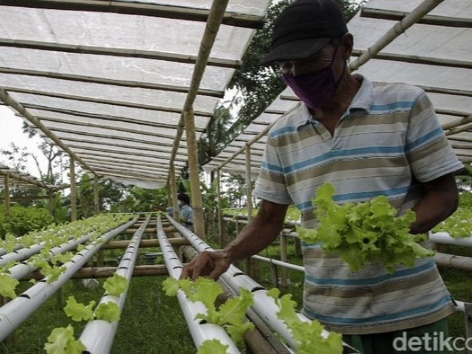

ARTIKEL
Pertanian Modern Dengan SmartFarming

Pertanian saat ini dan ke depan dihadapkan dengan tantangan besar yakni perubahan iklim dan pandemi covid 19. Selain dampak perubahan iklim, pertanian juga dihadapkan pada tantangan lahan yang semakin sempit, jumlah penduduk semakin besar, sehingga mengharuskan penggunakan teknologi yang smart. Smart agriculture merupakan teknologi di era Industri 4.0 untuk pengembangan pertanian modern, yang merupakan evolusi dari precision farming. Smart farming merupakan konsep manajemen pertanian yang menggunakan teknologi modern untuk meningkatkan kuantitas dan kualitas produk pertanian, berbasis teknologi yang dapat membantu petani meningkatkan hasil panen secara kuantitas dan kualitas melalui teknologi pemindaian tanah, manajemen data, akses GPS, serta teknologi Internet of Things. Aplikasi smart agriculture mencakup monitoring hasil pertanian, pemetaan lahan pertanian, manajemen irigasi, penyimpanan produk pertanian, delivery produk pertanian ke konsumen, dan lainnya. Hal ini dilakukan agar produksi terus meningkat dengan kualitas yang tinggi disertai optimalisasi peggunaan tenaga kerja sehingga dapat meningkatkan pendapatan petani. Smart farming perlu dikembangkan di Indonesia untuk meningatkan effisiensi sumberdaya alam, air dan kelestaran lingkungan, meningkatkan effisiensi suberdaya manusia dengan memanfaatkan mesin pertanian dan teknologi serta untuk menarik minat generasi muda terjun d bidang pertanian. kemajuan pertanian perlu didukung generasi milenial karena memiliki semangat berinovasi yang tinggi untuk melakukan cara-cara yang baru terhadap penanganan pertanian yang maju, mandiri dan modern. Terbukti, petani milenial rata-rata memiliki penghasilan puluhan juta, bahkan ratusan juta hanya dengan pemasaran hasil pertanian secara digital Kunci utama smart farming adaah data yang terukur berdasarkan sensor yang ada di lahan dan yang mengcover lahan pertanian meliputi identifikasi lahan, cuaca/iklim, identifikasi tanaman di setiap lokasi, kondisi tanah, pupuk, benih, pestisida, panen, kerusakan hasil panen, jumlah produksi dan pemasaran. Sensor yang ada diharapkan dapat memberikan informasi terkait kondisi lahan dan tanaman secara real time, sehingga dapat dapat memberikan rekomendasi pemupukan, irigasi, insektisida atau jadwal panen.
Dalam pelaksanaannya, smart farming melibatkan 6 teknologi yaitu:
- Teknologi penginderaan, teknologi sensor cerdas digunakan untuk mengetahui kandungan tanah yang sesungguhnya mulai dari kelembaban, kandungan air dan manajemen suhu. Semua terintegrasi dengan teknologi internet of thing (IoT) yang memungkinkan petani dapat memantau kondisi lahan tanpa harus pergi langsung ke lahan.
- Sifware application, aplikasi ini dapat mempermudah mengelola, mengolah data dan informasi yang dihasilkan dari alat sensor cerdas. Fungsinya sebagai antarmuka bagi petani supaya data tersebut lebih mudah dibaca dan dipahami.
- Teknologi komunikasi, perangkat telekomunikasi seluler dapat digunakan untuk mengirimkan informasi terkait kondisi lahan pertanian dan sebagai pengingat aktivitas pertanian.
- Teknologi GPS, perangkat GPS dapat digunakan untuk pemetaan lahan. GPS menerima sinyal satelit yang mengorbit ke bumi kemudian digunakan sebagai navigasi alat-alat pertanian. Mulai dari mengetahui lokasi lahan yang sudah atau belum dipupuk hingga mengetahui produktivitas suatu lahan
- Hardware, perangkat keras membantu pekerjaan secara otomatis dan terukur, seperti robot atau drone. Hal ini dilakukan unuk meningkatkan effisiensi dan effektivitas sarana produksi.
- Data analysis, semua data on farm akan dianalisa secara menyeluruh oleh system aplikasi dan digunakan sebagai acuan untuk pengambilan keputusan dan prediksi pertanian kedepan. Hasil Analisa juga dapat digunakan oleh petani untuk mendapatkan solusi dengan budidaya pertanian.